Visualization
Cropbox provides one main visualization family and an optional interactive wrapper. The same calls work with existing data or with a model that still needs to be simulated.
| Function | Start with | What it does |
|---|---|---|
visualize, visualize! | vectors, a DataFrame, a system, or data plus a system | draw existing data or run any needed simulations and draw the result |
manipulate | a callback or visualize arguments | add parameter widgets in a supported notebook |
For a saved analysis, it is usually clearest to call simulate, keep its DataFrame, and plot that table. Direct system visualization is convenient for quick response curves, comparisons, and checks while developing a model.
The public call families are:
| Call shape | Result |
|---|---|
visualize(X, Y) or visualize(df, x, y) | visualize existing arrays or table columns |
visualize(System, x, y) | simulate one system and plot its trajectory or response |
visualize([System1, System2], x, y) | compare compatible systems |
visualize(df, System, x, y) | overlay observations and a simulated trajectory |
visualize(obs, System, y; index) | observation-versus-estimate plot |
visualize(System, x, y, z) | two-factor heatmap or contour plot |
visualize! | append to an existing Plot and return the same wrapper |
Every form returns Cropbox's Plot wrapper and accepts the same labels, units, limits, kinds, and backend selection.
Common plotting forms
The examples below use one small trajectory model and one static response model.
using Cropbox
using DataFrames
@system VisualTrajectory(Controller) begin
rate => 1.0 ~ preserve(parameter, u"g/hr")
mass(rate) ~ accumulate(u"g")
reached(mass) => mass >= 3u"g" ~ flag
end
@system VisualResponse(Controller) begin
input => 0.0 ~ preserve(parameter)
slope => 1.0 ~ preserve(parameter)
response(input, slope) => slope * input ~ track(min = 0)
end
series = DataFrame(
hour = (0:4)u"hr",
observed = [0.1, 1.2, 1.9, 3.2, 3.8]u"g",
smooth = [0, 1, 2, 3, 4]u"g",
reached = [false, false, false, true, true],
)
nothingVectors and DataFrames
visualize(X::Vector, Y::Vector; options...)
visualize(X::Vector, [Y1, Y2]; options...)
visualize(df, x, y; options...)
visualize(df, x, [y1, y2]; options...)For a DataFrame, x and y may be column names as symbols or strings. They may also be an expression evaluated column by column, such as :(SWC / depth). The result is useful for a derived quantity that does not need to become a model variable. Functions used inside the expression must be visible in the calling Julia session; for a saved analysis, a named derived column is easier to test and reuse.
Array-based calls currently dispatch on concrete Vector values. Use collect(range) before passing a range directly.
visualize(series, :hour, :observed;
kind = :scatterline,
title = "Observed mass",
xlab = "Time",
ylab = "Mass",
legend = false,
)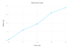
Passing several y columns draws several series. names controls their legend labels; legend is the legend title, not a Boolean switch for individual series.
visualize(series, :hour, [:observed, :smooth];
kind = :line,
names = ["observation", "reference"],
legend = "Series",
ylab = "Mass",
)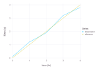
Plot kinds
Two-dimensional plots support these kind values:
kind | Use |
|---|---|
:scatter | separate observations; the default |
:line | a continuous ordered trajectory |
:scatterline | points and a connecting line |
:step | stages, counts, or Boolean state changes |
:hline | one or more horizontal reference lines |
:vline | one or more vertical reference lines |
step automatically treats Boolean values and other repeated categories as ordered levels. Supply ycat when their display order must be explicit.
visualize(series, :hour, :reached;
kind = :step,
ylab = "Threshold reached",
legend = false,
)An initial horizontal line needs xlim; an initial vertical line needs ylim. When the line is appended to a plot, Cropbox reuses that plot's limits.
plain_series = DataFrame(
x = 0:4,
observed = [0.1, 1.2, 1.9, 3.2, 3.8],
smooth = 0:4,
)
p = visualize(plain_series, :x, :observed;
kind = :scatter,
name = "observation",
xlab = "Time",
ylab = "Mass",
)
visualize!(p, plain_series, :x, :smooth;
kind = :line,
name = "reference",
)
visualize!(p, 3;
kind = :hline,
name = "threshold",
color = :lightgray,
)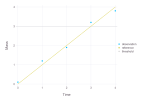
The one-value :hline and :vline helpers currently work most reliably when both axes are unitless or use compatible dimensions. For a plot with time on x and mass on y, draw a two-point unit-aware line instead:
p_units = visualize(series, :hour, :observed; kind = :scatter)
visualize!(p_units, [0, 4]u"hr", [3, 3]u"g";
kind = :line,
name = "threshold",
)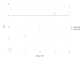
visualize! changes and returns the same Cropbox Plot. Use p[], p', or value(p) only when direct access to the backend object is needed, for example to call a backend-specific export function.
To save a Gadfly result without adding another plotting package:
p = visualize(series, :hour, :observed;
kind = :line,
backend = :Gadfly,
)
p[] |> Cropbox.Gadfly.SVG("observed.svg")PDF export additionally requires the Cairo and Fontconfig packages to be installed and imported in the current environment:
import Cairo, Fontconfig
p[] |> Cropbox.Gadfly.PDF("observed.pdf")The returned wrapper remains the portable part of the API; Cropbox.Gadfly is intentionally backend-specific.
Visualize a simulation
visualize(SystemType, x, y;
config = (), group = (), xstep = (),
base = nothing, stop = nothing, snap = nothing,
options...)This form calls simulate with x and y as output variables, then renders the result. The usual simulation meanings of base, stop, and snap apply.
visualize(VisualTrajectory, :time, :mass;
config = VisualTrajectory => :rate => 1,
stop = 4u"hr",
kind = :line,
ylab = "Mass",
legend = false,
)When y is a vector, all targets are drawn from the same simulation output. This is the form used for leaf gas-exchange limitation rates, garlic organ mass, and soil-water components in the tutorials.
visualize(Model, :time, [:leaf_mass, :bulb_mass, :total_mass];
config,
stop = :finished,
kind = :line,
names = ["leaf", "bulb", "total"],
)Parameter response curves
xstep varies the variable used on the x-axis. group makes one series for each value of another parameter. Both accept the same system-to-parameter pair shape used by @config.
visualize(VisualResponse, :input, :response;
xstep = VisualResponse => :input => 0:0.25:4,
group = VisualResponse => :slope => [0.5, 1.0, 1.5],
kind = :line,
ylab = "Response",
)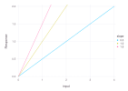
For a grouped curve, the group parameter becomes the default legend title and its values become the series labels. Pass names and legend to replace them. If names is a symbol, Cropbox reads the unique value of that output column and uses it as each label. The latter is useful when a label is determined indirectly by configuration.
Use xstep with a static or snapshot-like response. If the system advances for many steps, every snapshot from every configuration is placed in the same curve; in that case it is usually clearer to call simulate, select the desired time rows, and plot the resulting table.
Compare systems
Pass a vector of system types to compare compatible outputs. configs, names, and colors are parallel vectors and must match the systems in order.
@system FastVisualTrajectory(VisualTrajectory) begin
rate => 1.5 ~ preserve(parameter, u"g/hr")
end
visualize([VisualTrajectory, FastVisualTrajectory], :time, :mass;
configs = [(), ()],
names = ["baseline", "fast"],
colors = [:steelblue, :darkorange],
stop = 4u"hr",
kind = :line,
)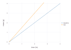
The systems do not need to share an implementation, but each must expose the requested x and y paths. Omit configs, or leave it empty, to use an empty configuration for every system. Supply a parallel vector explicitly when the positional pairing should be especially clear in teaching or analysis code.
Append simulations with visualize!
Use the mutating form when the layers are assembled conditionally or at different points in an analysis. nothing is accepted as the initial plot, but starting with visualize is usually easier to read.
p = visualize(VisualTrajectory, :time, :mass;
config = VisualTrajectory => :rate => 1,
stop = 4u"hr",
kind = :line,
names = ["baseline"],
legend = "Model",
colors = [:steelblue],
)
visualize!(p, FastVisualTrajectory, :time, :mass;
stop = 4u"hr",
kind = :line,
names = ["fast"],
colors = [:darkorange],
)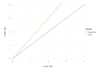
All appended layers must use compatible axis units. visualize! does not retain a simulation table, so call simulate explicitly when those values are needed for later statistics or export.
Keep the backend consistent across appended calls. If the initial call sets backend explicitly, pass the same value to each visualize! call; the current implementation does not infer that keyword from the existing wrapper.
Observations and model estimates
There are two distinct comparison plots.
Overlay trajectories
visualize(observations, SystemType, obs_x => model_x, obs_y => model_y;
config, stop, options...)Cropbox draws observations as points and model output as a line. Pairs map differently named columns; omit the pairs when both names already match.
observations = DataFrame(
hour = (0:4)u"hr",
measured = [0.1, 1.2, 1.9, 3.2, 3.8]u"g",
)
visualize(observations,
VisualTrajectory,
:hour => :time,
:measured => :mass;
config = VisualTrajectory => :rate => 1,
stop = 4u"hr",
name = "observation",
names = ["model"],
ylab = "Mass",
)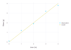
Pass a vector of systems and a parallel configs vector to overlay several models on the same observations.
Observation versus estimate
Omit the x argument and supply index. Cropbox simulates only at matching indices, joins observations and estimates, draws points, and adds the 1:1 line.
visualize(observations,
VisualTrajectory,
:measured => :mass;
index = :hour => "context.clock.time",
config = VisualTrajectory => :rate => 1,
stop = 4u"hr",
name = "model",
)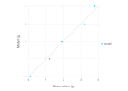
A vector target draws one observation-versus-estimate series for each target. For several model specifications of one target, pass named tuples with system, config, or configs fields:
models = [
(; system = VisualTrajectory,
config = VisualTrajectory => :rate => 0.9),
(; system = VisualTrajectory,
config = VisualTrajectory => :rate => 1.1),
]
visualize(observations, models, :measured => :mass;
index = :hour => "context.clock.time",
names = ["slow", "fast"],
stop = 4u"hr",
)These plots join on the index, so missing points, incompatible units, time-zone differences, or duplicate indices can change which rows appear. Check the joined data with evaluate or an explicit DataFrames join when a point is unexpectedly absent.
Heatmaps and contours
visualize(SystemType, x, y, z;
config = (), xstep = (), ystep = (),
base = nothing, stop = nothing, snap = nothing,
options...)xstep and ystep form a factorial grid. The result is plotted as a heatmap by default. This is the pattern used for the nitrogen-by-water-potential response in the Leaf Gas Exchange tutorial.
visualize(VisualResponse, :input, :slope, :response;
xstep = VisualResponse => :input => 0:0.25:4,
ystep = VisualResponse => :slope => 0.25:0.25:2,
kind = :heatmap,
xlab = "Input",
ylab = "Slope",
zlab = "Response",
aspect = 1.4,
)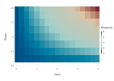
The same factorial result can be rendered as contours:
visualize(VisualResponse, :input, :slope, :response;
xstep = VisualResponse => :input => 0:0.25:4,
ystep = VisualResponse => :slope => 0.25:0.25:2,
kind = :contour,
zgap = 0.5,
zlabgap = 1,
xlab = "Input",
ylab = "Slope",
zlab = "Response",
aspect = 1.4,
backend = :Gadfly,
)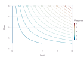
Three-column visualize(df, x, y, z) uses the same renderer. Set kind=:contour for contour lines. zlim fixes the color or contour range, zgap controls contour spacing, and zlabgap requests labels at a chosen interval. Contour rendering and the gap options are currently more complete in the Gadfly backend than in the terminal backend. Supply a complete, regularly ordered x-by-y grid for portable heatmap output; visualize creates that grid from its two factors.
Labels, units, limits, and backends
The main two-dimensional options are:
| Option | Meaning |
|---|---|
kind | :scatter, :line, :scatterline, or :step |
title, xlab, ylab | plot and axis labels |
name, names | one series label or several series labels |
legend, legendpos | legend title/visibility and inside position |
color, colors | one color or parallel series colors |
xlim, ylim | displayed data limits |
xunit, yunit | units used for conversion and axis labels |
ycat | explicit category order for a step plot |
aspect | requested width-to-height relation |
backend | :Gadfly or :UnicodePlots |
For three-column plots, zlab, zlim, zgap, and zlabgap control the color or contour dimension. legendpos=(x, y) places a Gadfly legend inside the plot at relative coordinates; the terminal backend warns and ignores that option.
Set legend=false to hide the legend. Units are inferred from arrays or DataFrame columns. An explicit xunit or yunit converts compatible values before plotting; it does not reinterpret an incompatible number. ZonedDateTime columns are converted to DateTime because the graphical backend does not accept zoned values directly.
Cropbox chooses Gadfly in Jupyter, Pluto, VS Code, and Documenter, and UnicodePlots in a plain terminal. Set backend when output must be identical across environments. Backend-specific plot objects remain an escape hatch, but code written against them is less portable than code using the options above.
Backend behavior is not completely identical:
| Feature | Gadfly | UnicodePlots |
|---|---|---|
| line, scatter, and step | supported | supported |
:scatterline | points plus line | line rendering |
| heatmap | supported | supported on a regular grid |
| contour | supported | warns and falls back to a heatmap |
inside legendpos | supported | ignored with a warning |
zgap, zlabgap | supported for contours | ignored with a warning |
Use backend=:Gadfly for publication figures that rely on contour labels, inside legends, or exact graphical composition. Use :UnicodePlots for fast terminal diagnostics.
Common failures
- A vector of systems requires parallel
configs,names, andcolorsin the same order. In particular,configsmust have the same length as the system vector. - A heatmap requires a complete, regularly ordered factorial grid. Missing combinations are better handled by constructing and checking a
DataFramebefore plotting. - Appended layers must have compatible units.
xunitandyunitconvert compatible quantities; they do not assign dimensions to unrelated values. - An explicitly selected backend must be repeated on appended calls.
- A grouped response curve may contain every snapshot from every configuration. Select one time point explicitly when a dynamic run would otherwise join unrelated trajectories.
- Observation-versus-estimate plots use an inner join. Missing, duplicated, or differently zoned index values can silently reduce or multiply the points; inspect the joined table when the count is unexpected.
- Backend warnings usually indicate a presentation limitation, not a failed simulation. Re-run with
backend=:Gadflybefore changing model equations.
Interactive parameter controls
The callback form receives a configuration made from the current widget values:
manipulate(c -> visualize(VisualTrajectory, :time, :mass;
config = c,
stop = 4u"hr",
kind = :line,
);
parameters = VisualTrajectory => :rate => 0:0.25:2,
config = VisualTrajectory => :rate => 1,
)The convenience form sends its positional and remaining keyword arguments to visualize:
manipulate(VisualTrajectory, :time, :mass;
parameters = VisualTrajectory => :rate => 0:0.25:2,
config = VisualTrajectory => :rate => 1,
stop = 4u"hr",
kind = :line,
)Ranges and arrays make sliders; arrays of symbols or enum values and dictionaries make drop-down controls; Booleans make check boxes. Interactive widgets require a working WebIO provider. Without one, Cropbox warns and returns a single static callback result, which is useful for testing the code but is not interactive.
Treat a widget as an exploration tool. Save the selected values as an explicit Config before using them in a reproducible analysis.